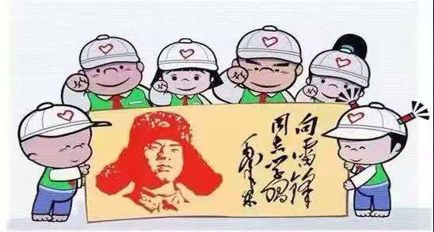
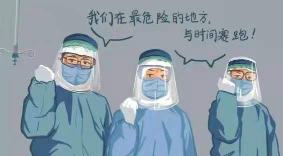

全国抗击新冠肺炎疫情表彰大会举行之际，一段视频在网上刷屏。长安街上，钟南山、张伯礼、张定宇、陈薇四位抗疫英雄乘坐礼宾车，在国宾护卫队的护卫下前往人民大会堂。网友纷纷留言：最高礼遇！以国之名，致敬！国家表彰的，是一种悬壶济世、舍己为人的责任担当；人们致敬的，是一种敢于牺牲、无私奉献的精神境界。

哪有什么岁月静好，不过是有人替你负重前行。抗疫英雄是国家危难时刻挺身而出、逆行出征的奔跑者，抗疫英雄是家人患病、依然坚守岗位的担当者，抗疫英雄是环卫工人、医务工作者、教师、心理咨询师、快递小哥等各行各业的坚守者，抗疫英雄就在我们的身边。今天，以国之名表彰这些英雄是我们对英雄的崇敬，是希望更多的党员干部向英雄看齐，争当时代先锋。
回望抗疫之路，党员干部要温“故”知“心”。在与时间赛跑，与病毒作斗争的过程中，有很多感人的故事让我们泪目，谱写了一个个感天动地的抗疫故事。党员干部要认真品读抗疫故事，每一个抗疫故事都是真实的呈现，是对疫情防控之时的情景再现，我们能再次感受到当时情况的紧急，看到无数党员干部的担当与责任，彰显了他们的初心和使命，他们用牺牲精神和奉献精神，回应了时代的召唤。

聆听英雄感言，党员干部要主动担当。“人民英雄”国家荣誉称号获得者陈薇说了这样一句话：“穿上这身军装，一切都是我应该做的。”“军装”穿在身上，责任刻进心里，始终对国家和人民保持一颗赤子之心，才能在“无硝烟的战场”坚定向前，冲锋在前。聆听抗疫英雄的感言，他们没有获得荣誉的沾沾自喜，在国家和人民的信任和肯定面前，荣誉是他们心中沉甸甸的责任。党员干部要学习他们居功不自傲，在自己的岗位上埋头苦干，以更优异的成绩向党和人民交上合格答卷。
主动看齐英雄，党员干部要争当英雄。见贤思齐，见不贤而自省。党员干部要自觉地对标抗疫英雄，学习他们身上的优良品质，汲取他们的精神力量，及时发现自己的不足和短板，在自我革新、自我净化中，不断地提升自己，时刻准备着，在国家和人民需要的时候，能够挺得上去，干得好，才能接过历史的“接力棒”，沿着英雄的足迹，走好英雄之路，当好新时代的英雄。（林平）